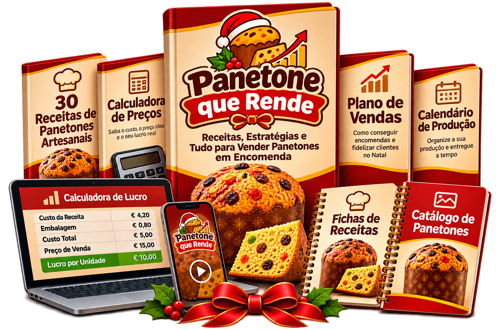
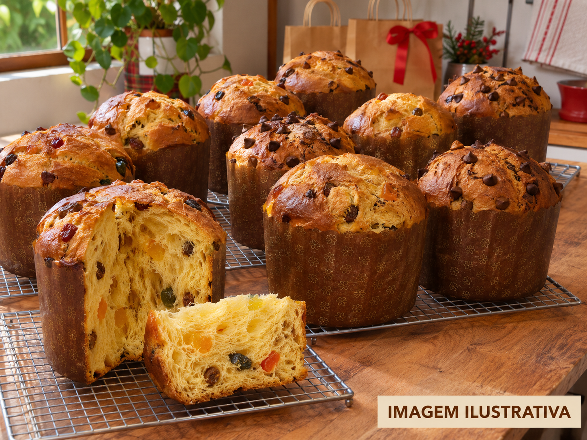

O subsídio de Natal não chega para tudo?Descubra uma forma de procurar algum rendimento adicional, sem depender de fazer mais horas no trabalho.
Transforme a sua cozinha numa fonte de dinheiro extra neste Natal
Aprenda a preparar panettones artesanais para vender por encomenda. Divulgue pelo WhatsApp, peça um sinal antes de comprar os ingredientes e descubra como ganhar algum dinheiro extra nesta época natalícia.
9,99 €Pagamento único • Sem mensalidades
QUERO COMEÇAR A VENDER NESTE NATAL
✓ Acesso imediato•✓ Garantia de satisfação de 15 dias•✓ Pagamento seguro
Acesso após confirmação do pagamento
EDIÇÃO DE NATAL 2026
Cada semana que passa é menos tempo para receber encomendas
Quanto mais perto estivermos do Natal, menos tempo terá para divulgar os seus produtos, organizar encomendas e preparar as entregas.
TEMPO ATÉ 20 DE DEZEMBRO
00dias
:
00horas
:
00min
UMA OPORTUNIDADE REAL
Dezembro não tem de ser o mês em que o dinheiro desaparece
Entre presentes, compras de Natal, jantares de família e contas para pagar, esta época pode pesar no orçamento. Mas também pode ser uma oportunidade para fazer algo diferente. Com as receitas certas e um plano de encomendas organizado, pode começar a preparar doces natalícios para vender a pessoas da sua zona.
Entre presentes, supermercado e contas, o dinheiro vai-se num instante.Aproveite a época natalícia para criar produtos que as pessoas possam comprar para oferecer ou partilhar em família.
E se algumas prendas de Natal fossem pagas com as suas próprias encomendas?Comece por divulgar a amigos, familiares, colegas e pessoas da sua zona.
Tenha um projeto seu, organizado ao seu ritmo.Decida o que produzir, quantas encomendas aceitar e quando fazer as entregas.
Todos os anos há quem procure doces especiais para oferecer no Natal. E se este ano também comprassem os seus?
A ESTRATÉGIA QUE FAZ A DIFERENÇA
O Método
Encomenda Primeiro
Primeiro recebe a encomenda. Depois organiza a produção. Em vez de preparar dezenas de panettones sem saber se os vai vender, aprenda a divulgar um pequeno menu, receber confirmações e pedir um sinal antes de comprar os ingredientes destinados a cada encomenda. Menos desperdício. Mais organização. Menos dinheiro empatado em produtos que podem ficar por vender.
01
Crie o seu menu de Natal
Escolha 3 produtos com preços diferentes, para chegar a clientes com diferentes orçamentos.
02
Divulgue pelo WhatsApp
Utilize mensagens prontas para partilhar nos estados, em grupos adequados e com os seus contactos.
03
Receba um sinal
Combine as condições da encomenda e peça um sinal para confirmar a reserva.
04
Prepare e entregue
Organize os ingredientes, as quantidades e as entregas com um plano de produção que inclui um exemplo para 30 unidades num fim de semana.
FEEDBACKS REAIS
Quem já começou a vender
Veja os resultados partilhados pelas alunas.
Mariana
HOJE
Inês!!! nem acredito 😭 acabei de receber a minha primeira encomenda!!
09:14A sério?? 😍 conta-me tudo!
09:15✓✓pus as imagens no estado do WhatsApp ontem e hoje uma senhora pediu-me 3 panetones!!
09:16Que bom!! 🥹 E já ficou tudo combinado?
09:17✓✓simmm! já me enviou o sinal por MB WAY! ainda nem fui comprar os ingredientes 😂❤️
09:18Mariana — A primeira encomenda
Patrícia
HOJE
Inês, isto de receber o sinal antes de fazer os panetones é mesmo uma grande ajuda 😍
13:42Então, já tens encomendas? ❤️
13:43✓✓tenho 6 para este fim de semana!! e já recebi os sinais de todas 🥹
13:44Que maravilha!! Agora é organizar tudo com calma 😊
13:45✓✓exatamente! tinha tanto receio de gastar dinheiro e depois não vender nada. assim fico muito mais descansada ❤️
13:46Patrícia — Encomendas antes de produzir
Joana
HOJE
Inês, tenho de te contar uma coisa!! 😭
10:30Conta!! O que aconteceu? 😍
10:31✓✓uma empresa aqui da zona perguntou-me se conseguia preparar 15 panetones para oferecer aos funcionários no Natal!!
10:32Uau!! Que oportunidade tão boa! Já combinaste os detalhes?
10:33✓✓ainda estamos a falar das embalagens e dos preços. nunca pensei que pudesse aparecer uma encomenda destas 🥹
10:34Joana — Encomenda de uma empresa
Rita
HOJE
Inês, fiz hoje o meu primeiro panetone e ficou tão bonito!! 😍
18:21A sério? Que bom!! E a massa, correu tudo bem?
18:22✓✓sim!! estava cheia de medo porque nunca tinha feito nenhum 😂
18:23Vês? Com calma e seguindo os passos, vai-se aprendendo ❤️
18:24✓✓ainda quero melhorar o recheio, mas já estou muito mais confiante para começar a experimentar outros sabores 🥰
18:25Rita — Começar sem experiência
Sofia
HOJE
Inês, as imagens do kit de divulgação ficaram tão giras no meu WhatsApp 😍
11:08Ainda bem!! Já tiveste alguma resposta?
11:09✓✓sim! duas colegas do trabalho perguntaram-me logo os preços 😂
11:10Boa!! Já tens o teu menu preparado?
11:11✓✓tenho! usei o modelo do guia e agora é só enviar quando alguém pergunta. muito mais simples ❤️
11:12Sofia — A divulgação pelo WhatsApp
Cláudia
HOJE
Inês, ainda bem que fiz as contas antes de começar a vender 😅
16:40Então? Estavas a cobrar muito pouco?
16:41✓✓estava!! nem tinha contado com as embalagens e com a eletricidade 🤦♀️
16:42É por isso que é tão importante calcular os custos todos 😊
16:43✓✓agora já consigo perceber quanto gasto em cada panetone e definir um preço que compense ❤️
16:44Cláudia — Aprender a calcular os preços
CONTEÚDO PRÁTICO, PASSO A PASSO
O que vai encontrar no guia
Tudo organizado para passar das receitas à preparação das suas primeiras encomendas, sem ter de descobrir cada passo sozinho.
UM MENU DE NATAL QUE CHAMA A ATENÇÃO
Aprenda a montar um pequeno menu com três opções, incluindo panettone tradicional, versões de chocolate e uma sobremesa de panettone no copo, que não exige preparar massa levedada de raiz.
MASSA SEM COMPLICAÇÕES
Aprenda a preparar a massa passo a passo, conheça os tempos de preparação e descubra como evitar os erros mais comuns.
RECHEIOS E COBERTURAS
Ideias de recheios de chocolate, creme de leite em pó, doce de leite, maracujá e avelã para criar versões especiais de Natal.
PREÇOS QUE COMPENSAM
Aprenda a calcular ingredientes, embalagens, energia e tempo de trabalho para definir preços de venda em euros sem se esquecer dos custos.
O MÉTODO ENCOMENDA PRIMEIRO
Modelos de mensagens para apresentar os produtos, responder a clientes, confirmar encomendas e combinar o pagamento do sinal.
PLANO DE PRODUÇÃO
Um exemplo de organização para preparar até 30 unidades num fim de semana, ajustável ao seu tempo, à capacidade de produção e às condições de trabalho.
MATERIAIS PARA AJUDAR A VENDER
Também recebe materiais prontos a utilizar
Kit de Divulgação de Natal
Modelos de imagens para divulgar os seus panettones nos estados do WhatsApp, em mensagens e nas redes sociais.
Etiquetas para as Suas Embalagens
Dê um aspeto mais cuidado e profissional às suas encomendas com modelos de etiquetas personalizáveis. Acrescente a informação obrigatória aplicável aos alimentos que comercializa.
PARA COMEÇAR COM MAIS ORGANIZAÇÃO
E ainda recebe 3 bónus
Lista de Compras Organizada
Listas de referência para preparar 10, 30 ou 50 unidades e planear os ingredientes e as embalagens necessários.
Caderno de Encomendas
Registe os clientes, os produtos pedidos, os sinais recebidos e as datas de entrega para não perder o controlo das encomendas.
Guia de Fornecedores e Compras
Saiba o que comparar ao procurar ingredientes, embalagens e materiais em Portugal, para evitar despesas desnecessárias.
EXEMPLO DE VENDAS NUM FIM DE SEMANA★ ★ ★
10 panettones recheados125 €10 × 12,50 €
20 mini panettones de chocolate90 €20 × 4,50 €
10 sobremesas de panettone no copo50 €10 × 5,00 €
TOTAL DE VENDAS NUM FIM DE SEMANA265 €
UM EXEMPLO PARA PERCEBER O POTENCIAL DAS ENCOMENDAS
Faça as contas ao seu Natal
Imagine preparar um pequeno menu, divulgar os seus produtos e conseguir organizar encomendas para os fins de semana que antecedem o Natal. Mesmo começando com poucas unidades, pode testar quais os produtos que despertam mais interesse e ajustar a sua oferta à procura. Não precisa de começar em grande. Precisa de começar com um plano.
Simulação meramente ilustrativa de faturação bruta, não de lucro. Os preços, a procura, os custos, os impostos e a capacidade de produção variam. Não existe qualquer garantia de vendas ou rendimentos.

EXEMPLO DE FATURAÇÃO: 265 €A ALTURA DE COMEÇAR É AGORA
Este Natal pode ser o início de um novo projeto
- Os 6 módulos do Método Panettone Lucrativo
- Kit de Divulgação de Natal
- Etiquetas Personalizáveis
- Bónus: Lista de Compras Organizada
- Bónus: Caderno de Encomendas
- Bónus: Guia de Fornecedores e Compras
- Acesso imediato
OFERTA DE NATAL — POR APENAS 9,99 €
3 bónus incluídos sem custo adicional Valor estimado dos materiais: 23,70 €
Por apenas9,99 €Pagamento único • Sem subscrição
MB WAY • Multibanco • Cartão, conforme disponível no checkoutPagamento seguro • Acesso enviado por e-mail após confirmaçãoGarantia comercial de satisfação de 15 dias*
GARANTIA DE SATISFAÇÃO
Compre com tranquilidade
Garantia comercial de satisfação de 15 dias Queremos que tenha confiança na sua compra. Explore o guia, conheça as receitas e veja como funciona o Método Encomenda Primeiro. Se, durante os primeiros 15 dias após a compra, considerar que o conteúdo não corresponde ao que foi apresentado nesta página, pode pedir o reembolso ao abrigo da nossa garantia comercial de satisfação. Sem complicações desnecessárias. Esta garantia comercial é adicional e não limita os direitos legais dos consumidores, incluindo o direito de livre resolução quando aplicável. Aplicam-se as condições específicas dos conteúdos digitais, apresentadas nos termos da compra.
AINDA TEM DÚVIDAS?
Perguntas frequentes
Nunca fiz panettone. Vou conseguir acompanhar?
Sim. O guia foi pensado para explicar as receitas passo a passo, incluindo a preparação da massa, os recheios e os erros mais comuns. Há também uma sobremesa de panettone no copo que não exige fazer a massa de raiz.
Preciso de muito dinheiro para começar?
Não precisa de comprar grandes quantidades de ingredientes logo no início. O método ensina a planear um menu pequeno e a organizar encomendas com sinal, para reduzir o investimento antecipado. Ainda assim, deve contar com os custos dos testes, materiais e requisitos necessários para produzir e vender legalmente.
Ainda vou a tempo de receber encomendas neste Natal?
Sim, ainda pode preparar o seu menu e começar a divulgá-lo. Quanto mais cedo organizar os produtos, os preços e as condições de entrega, mais tempo terá para dar a conhecer a sua oferta. As vendas dependem da procura e da sua capacidade de produção.
Preciso de equipamento profissional?
O guia apresenta receitas e utensílios para confeção em pequena escala. Para comercializar alimentos, deve garantir que as instalações, os equipamentos e os processos cumprem os requisitos legais e de segurança alimentar aplicáveis.
Como recebo o acesso?
Depois de o pagamento ser confirmado, recebe no e-mail indicado na compra as instruções para aceder ao conteúdo digital.
Durante quanto tempo tenho acesso?
O acesso ao guia e aos materiais incluídos é válido durante 1 ano a contar da compra.
Preciso de abrir atividade nas Finanças para vender?
Se ainda está a dar os primeiros passos, pode começar por aprender as receitas, experimentar os sabores e preparar o seu menu de Natal. Antes de começar a vender, basta informar-se sobre as obrigações fiscais e as regras de segurança alimentar aplicáveis à sua situação em Portugal.
E se o guia não for aquilo de que estava à espera?
Pode contactar o apoio dentro do prazo previsto na Garantia comercial de satisfação de 15 dias, nos termos apresentados. Mantém igualmente os direitos legais aplicáveis à sua compra, tendo em conta as regras específicas para conteúdos digitais.
NÃO DEIXE TUDO PARA A ÚLTIMA HORA
O Natal chega depressa. As encomendas precisam de tempo.
Não espere pela semana do Natal para começar a pensar nas receitas, nas embalagens e na divulgação. Prepare o seu menu, organize os preços e descubra como apresentar os seus produtos a potenciais clientes. Comece por aprender. Depois avance ao seu ritmo.
QUERO COMEÇAR AGORA — 9,99 €